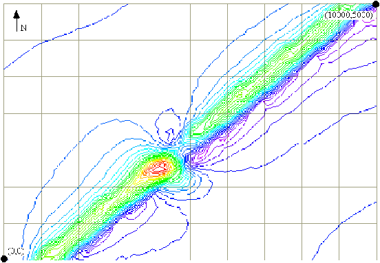
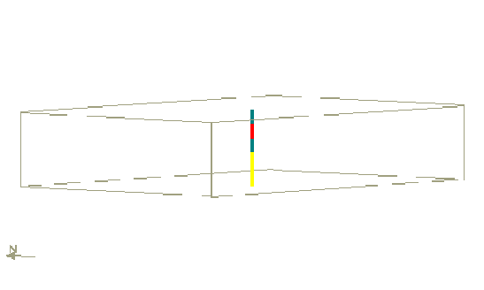

Tutorial 6: Exploration simulation
Exercise 6: Using Noddy for exploration simulations
In this example we provide a simple exploration scenario that allows a drilling program to be developed.
You are provided with an aeromag image (80 m flight height) called bore.mag of a regional survey over a dyke that has elsewhere been associated with mineralisation. You have graciously been provided with enough funds to finance 5000 metres worth of drilling, but due to the inflexibility of the new computerised order forms you can only drill holes in 500 m increments. Can you find the ore body?

1) Load in the history file Q6.his which contains the scenario you will be using, but DO NOT LOOK AT THE DETAILS OF THE HISTORY, THAT WOULD BE CHEATING!
2) Use the Geology->Borehole->Import->3D menu to load 500, 1500 or 2000 m drill holes (named 500.xyz, 1500.xyz etc). These files are simply 3 column XYZ ASCII lists of drill hole position (Z is positive up).
After you have loaded a file, it will allow you to select which columns contain X, Y & Z values and what offset to apply to the data. Don’t touch the column settings.
To position the drill holes, which all nominally start at a location of 0,0,0, apply an offset to the X&Y values, locating yourself with the X,Y values provided in the status bar.
The three rock types present are:
yellow- background sediments
blue- basalt dyke
red- mineralisation
You will then be shown a 3D visualisation of the drill hole with colours representing the three rock types present. Once you find the red mineralisation, you may retire.

All drill holes are vertical, and only record the geology at the XYZ positions used.
Each subsequent drill hole will be added to the same figure as long as you keep that figure open.
It is probably wise to record on a piece of paper the X,Y locations of the drill hole collars so that you can design your drilling program.
Noddy · open source under the MIT licence · Loop3D/noddy_qt